5 Week 5: Google Earth Engine
5.1 Summary
5.1.1 Introduction about Google Earth Engine
Google Earth Engine is a cloud-based platform for geospatial data analysis and visualization. It provides access to a vast repository of satellite imagery and geospatial data, as well as a powerful suite of tools for processing and analyzing this data.
The advantages of Earth Engine is scalability. The platform can handle extremely large datasets and perform complex analysis in near real-time, making it well suited for monitoring changes on a global scale. Earth Engine also offers an easy-to-use programming interface (use command-based programming, env: javascript), allowing users to write custom scripts and algorithms to perform specific analysis tasks.
Google Earth Engine is also widely used by government agencies, NGOs, and academic institutions for a variety of purposes, including environmental monitoring, natural resource management, and disaster response. The platform is free to use for non-commercial purposes, and access to its data and tools can be granted through a simple application process.
Here is the link for GEE guidance: https://developers.google.com/earth-engine/guides/objects_methods_overview
5.1.2 Objects in GEE
Image: a fundamental raster data type
ImageCollection: a set of images
Geometry: a fundamental vector data type
Feature: a geometry with attributes
FeatureCollection: a set of feature
Reducer: compute statistics or perform aggregations
Join: combine databases (images or feature collections) based on keys
Array: an object for multi-dimensional analyses
Chart: an object for charting properties and spatiotemporal redfuctions
5.1.3 Architecture of GEE
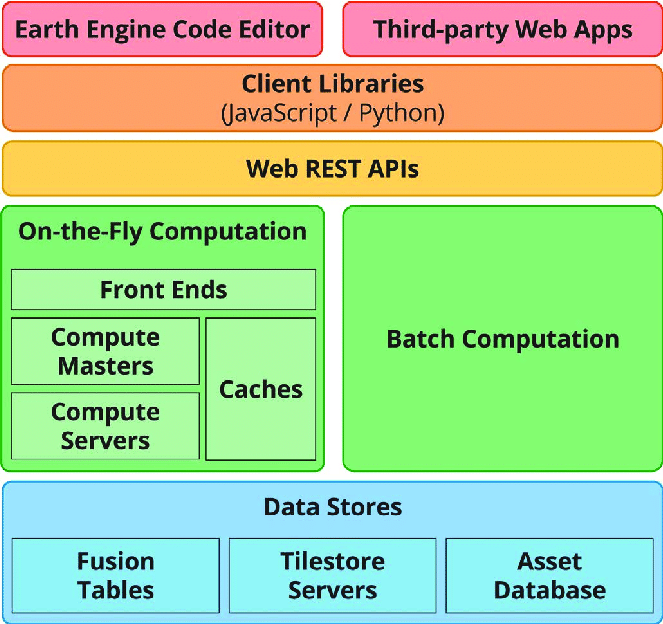
The manipulation languages for client are JavaScript and Python, and all the requests will be responded by REST API. It has a cluster which contains masters and servers, MapReduce is used to do batch processing job, there are three kinds of databases for storage.
5.1.4 Application of Google Earth Engine
Load map, point of interest: Changzhou city, Jiangsu Province [31.81, 119.97]
var Changzhou = ee.FeatureCollection('users/giscodingmo/gadm41_CHN_2')
.filter('NL_NAME_1 == "常州市"');
var oneimage_study_area_cloud = ee.ImageCollection('LANDSAT/LC08/C02/T1_L2')
.filterDate('2021-01-01', '2022-12-10')
.filterBounds(Changzhou) // Intersecting ROI
.filter(ee.Filter.lt("CLOUD_COVER", 0.1));
// load the image
var image_120_38 = ee.Image('LANDSAT/LC08/C02/T1_L2/LC08_120038_20211004')
// add the image on the map
Map.addLayer(one_image, {bands: ["SR_B4", "SR_B3", "SR_B2"]}, "Landsat 8")Result:
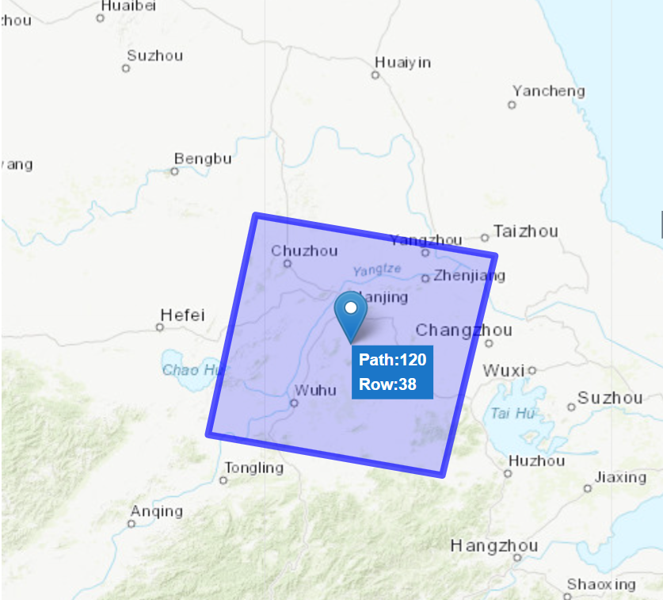
5.1.5 Discussion of median method
Initially, I use imageCollection.reduce() function (median method) to reduce the images:
var median = oneimage_study_area_cloud.reduce(ee.Reducer.median());
// print the image info
print(median, "median")Median method is effective when the classification task is between those objects which have giant jump such as forest and non-forest area, water and non-water area.
If the gap is not obvious, it is difficult to use median method to integrate images. To improve the accuracy of the classification, an improved method is to add other quartiles to the median, e.g. 25% quartile, 75% quartile. Another method is using seasonal median (spring, summer, fall, winter) to substitute single median, use a curve to fit the trend.
// example of season medians
function seasonComposite(start) {
var end = ee.Number(start).add(2)
// transfer the data type
return collection
.filter(ee.Filter.calendarRange(start, end, "month"))
.median()
}
// call
var seasons = ee.List([1,4,7,10]).map(seasonComposite);
var composite = ee.ImageCollection(seasons).toBands();5.1.6 Better images
5.1.6.1 True color image
write a function for the surface reflectance rate and temperature adjustment in Landsat Collection 2
// Applies scaling factors in Collection 2
function applyScaleFactors(image) {
var opticalBands = image.select('SR_B.').multiply(0.0000275).add(-0.2);
var thermalBands = image.select('ST_B.*').multiply(0.00341802).add(149.0);
return image.addBands(opticalBands, null, true)
.addBands(thermalBands, null, true);
}
// call our collection to the function and assign it to a new variable
var oneimage_study_area_cloud_scale = oneimage_study_area_cloud.map(applyScaleFactors);
// apply the median reducer
var oneimage_study_area_cloud_scale_median = oneimage_study_area_cloud_scale.reduce(ee.Reducer.median());
print(oneimage_study_area_cloud_scale_median)
// set up some of the visualisation paramters
var vis_params = {
bands: ['SR_B4_median', 'SR_B3_median', 'SR_B2_median'],
min: 0.0,
max: 0.3,
};
// add a layer to the map
Map.addLayer(oneimage_study_area_cloud_scale_median, vis_params, 'True Color (432)');Result:
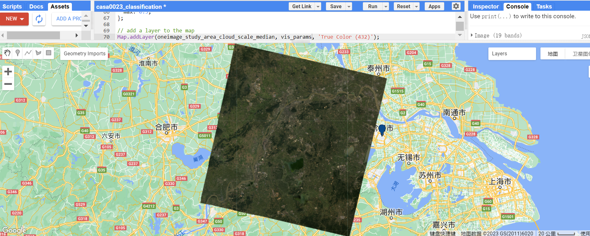
5.1.6.2 Clip image
var clip = meanImage.clip(Changzhou)
.select(['SR_B1', 'SR_B2', 'SR_B3', 'SR_B4', 'SR_B5', 'SR_B6', 'SR_B7']);
var vis_params3 = {
bands: ['SR_B4', 'SR_B3', 'SR_B2'],
min: 0,
max: 0.3,
};
// map the layer
Map.addLayer(clip, vis_params3, 'clip');Result: the image boundary is followed by city boundary
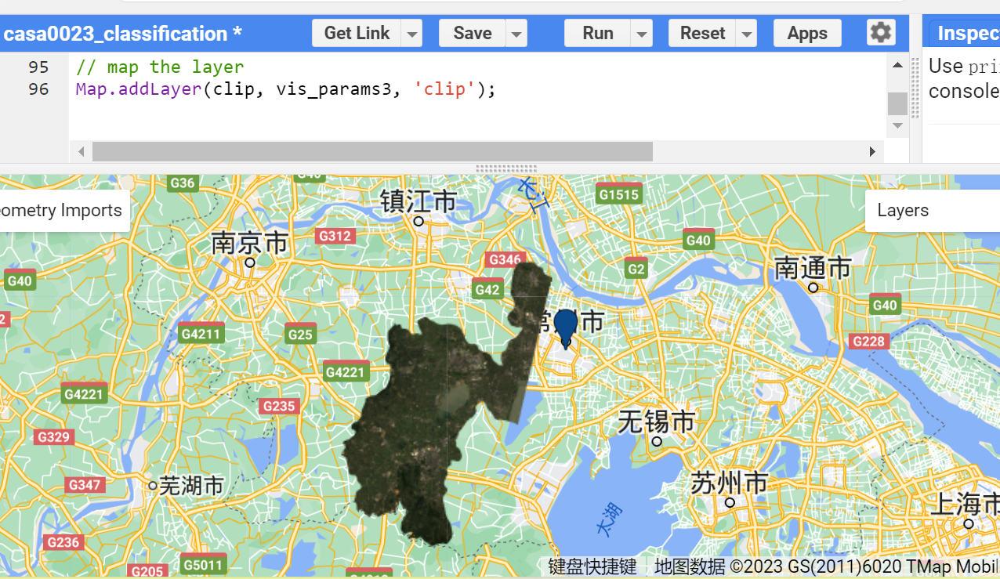
5.1.7 Texture measures
// based on the clip generated before
var glcm = clip.select(['SR_B1', 'SR_B2', 'SR_B3', 'SR_B4', 'SR_B5', 'SR_B6', 'SR_B7'])
.multiply(1000)
.toUint16()
.glcmTexture({size: 1})
.select('SR_.._contrast|SR_.._diss')
.addBands(clip);
// add to the map, but change the range values
Map.addLayer(glcm, {min:15, max:650 }, 'glcm');Result:
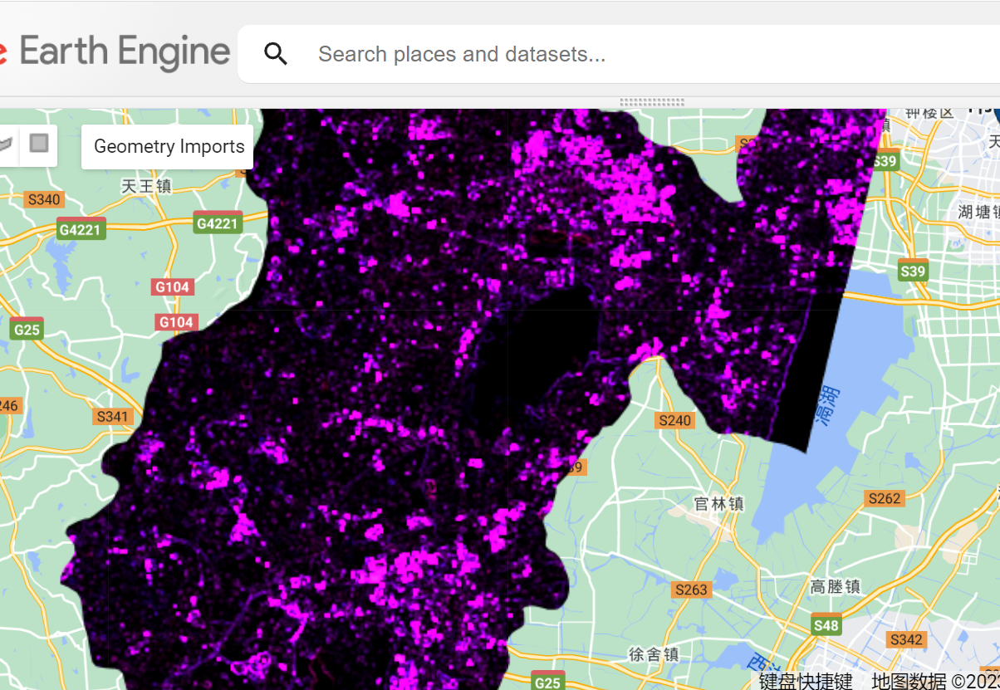
5.1.8 PCA
Principle component analysis code is here:
var scale = 30;
var bandNames = glcm.bandNames();
// print(bandNames)
var region = Changzhou.geometry();
// Map.centerObject(region, 10);
// Map.addLayer(ee.Image().paint(region, 0, 2), {}, 'Region');
// print(region, "Changzhou_geometry")
// print(bandNames)
// mean center the data and SD strech the princapal components
// and an SD stretch of the principal components.
var meanDict = glcm.reduceRegion({
reducer: ee.Reducer.mean(),
geometry: region,
scale: scale,
maxPixels: 1e9
});
var means = ee.Image.constant(meanDict.values(bandNames));
var centered = glcm.subtract(means);
// This helper function returns a list of new band names.
var getNewBandNames = function(prefix) {
var seq = ee.List.sequence(1, bandNames.length());
return seq.map(function(b) {
return ee.String(prefix).cat(ee.Number(b).int());
});
};
// This function accepts mean centered imagery, a scale and
// a region in which to perform the analysis. It returns the
// Principal Components (PC) in the region as a new image.
var getPrincipalComponents = function(centered, scale, region) {
// Collapse the bands of the image into a 1D array per pixel.
var arrays = centered.toArray();
// Compute the covariance of the bands within the region.
var covar = arrays.reduceRegion({
reducer: ee.Reducer.centeredCovariance(),
geometry: region,
scale: scale,
maxPixels: 1e9
});
// Get the 'array' covariance result and cast to an array.
// This represents the band-to-band covariance within the region.
var covarArray = ee.Array(covar.get('array'));
// Perform an eigen analysis and slice apart the values and vectors.
var eigens = covarArray.eigen();
// This is a P-length vector of Eigenvalues.
var eigenValues = eigens.slice(1, 0, 1);
// This is a PxP matrix with eigenvectors in rows.
var eigenValuesList = eigenValues.toList().flatten()
var total = eigenValuesList.reduce(ee.Reducer.sum())
var percentageVariance = eigenValuesList.map(function(item) {
return (ee.Number(item).divide(total)).multiply(100).format('%.2f')
})
print("percentageVariance", percentageVariance)
var eigenVectors = eigens.slice(1, 1);
// Convert the array image to 2D arrays for matrix computations.
var arrayImage = arrays.toArray(1);
// Left multiply the image array by the matrix of eigenvectors.
var principalComponents = ee.Image(eigenVectors).matrixMultiply(arrayImage);
// Turn the square roots of the Eigenvalues into a P-band image.
var sdImage = ee.Image(eigenValues.sqrt())
.arrayProject([0]).arrayFlatten([getNewBandNames('sd')]);
// Turn the PCs into a P-band image, normalized by SD.
return principalComponents
// Throw out an an unneeded dimension, [[]] -> [].
.arrayProject([0])
// Make the one band array image a multi-band image, [] -> image.
.arrayFlatten([getNewBandNames('pc')])
// Normalize the PCs by their SDs.
.divide(sdImage);
};
// Get the PCs at the specified scale and in the specified region
var pcImage = getPrincipalComponents(centered, scale, region);
// Plot each PC as a new layer
for (var i = 0; i < bandNames.length().getInfo(); i++) {
var band = pcImage.bandNames().get(i).getInfo();
Map.addLayer(pcImage.select([band]), {min: -2, max: 2}, band);
}Result: I got the pictures, the number is equal to the length of bandNames, in my case, the bandNames contains 21 elements.
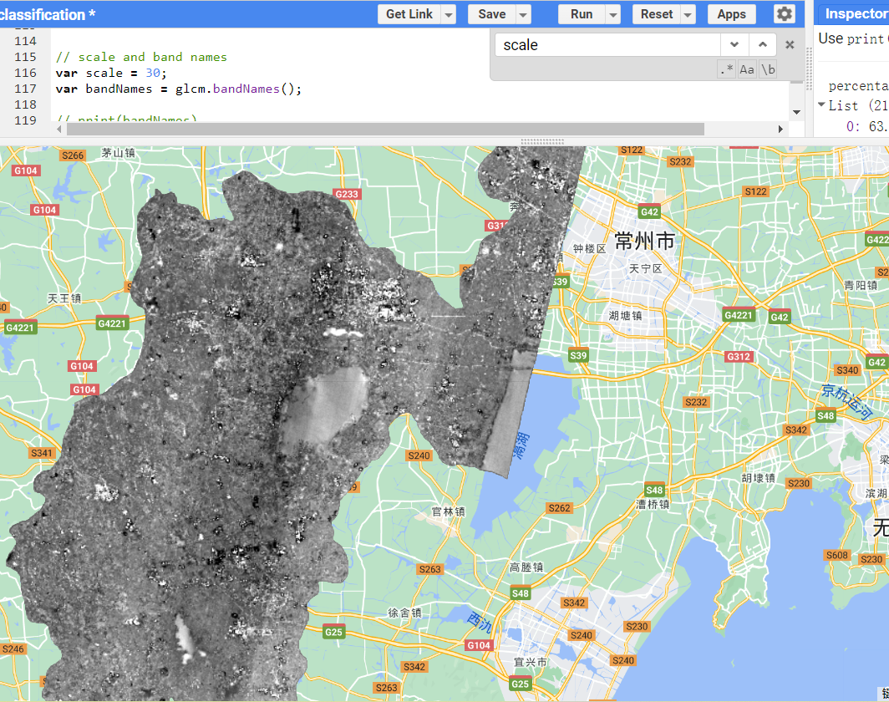
The first component can explain 63.68% of variance within the collection and the second component explains 26.66%, the third explains only 6.11%, therefore, I can just add pc1 and pc2 instead of the entire image, somethimes, pc3 can also be added to improve the accuracy, reaching 96.45%.
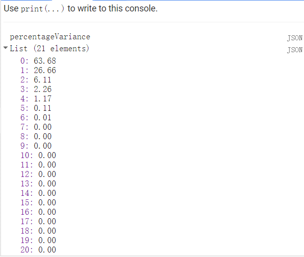
Map.addLayer(pcImage, {bands: ['pca3', 'pc2', 'pc1'], min: -2, max: 2}, 'PCA bands 1, 2 and 3');
Map.addLayer(pcImage, {bands: ['pc2', 'pc1'], min: -2, max: 2}, 'PCA bands 1, 2');Comparison between 2 components and 3 components:
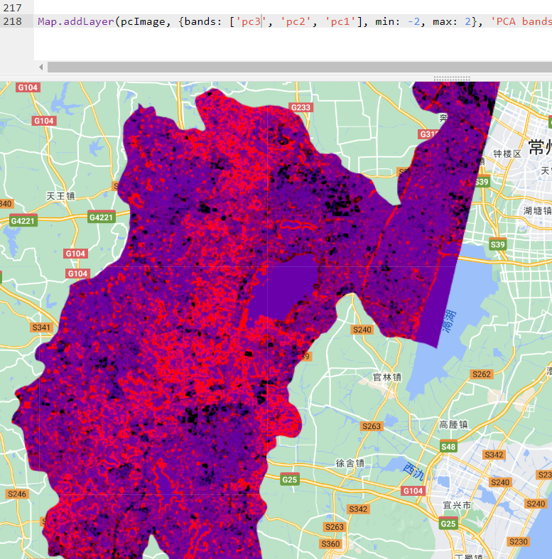
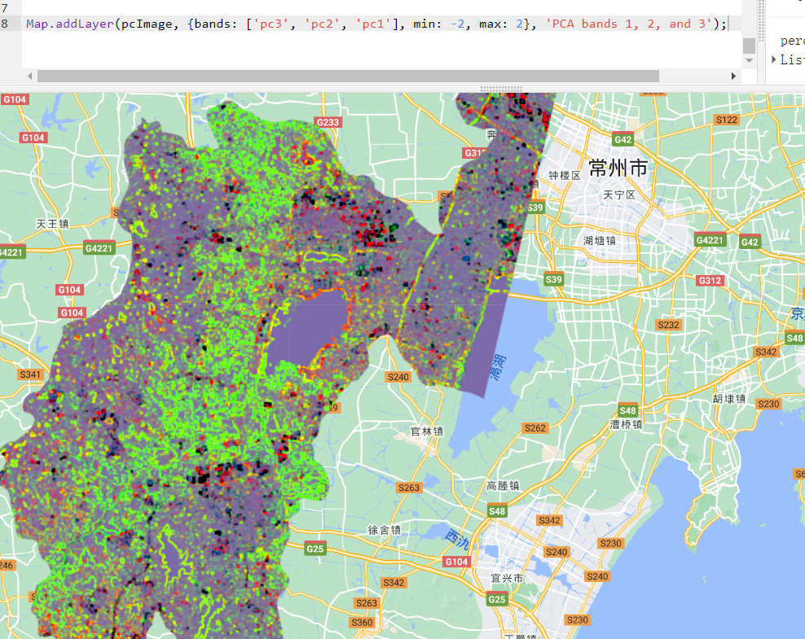
Export image to drive
var PCA_out = pcImage.select(['pc1', 'pc2', 'pc3'])
var projection = PCA_out.select('pc1').projection().getInfo();
var bounds = Changzhou.geometry();
// Export the image, specifying the CRS, transform, and region.
Export.image.toDrive({
image: PCA_out,
description: 'PCA_Changzhou',
scale:30,
crs: projection.crs,
maxPixels: 100E10,
region: bounds
});5.1.9 Band math (NDVI)
Calculate the NDVI quickly, use blue to identify the water area, green to identify the forest or vegetation area and white to identify the town, city
//NDVI
var NDVI_1 = clip.select('SR_B5').subtract(clip.select('SR_B4'))
.divide(clip.select('SR_5').add(clip.select('SR_B4')));
Map.addLayer(NDVI_1, { min: -1, max: 1, palette: ['blue', 'white', 'green']}, 'NDVI');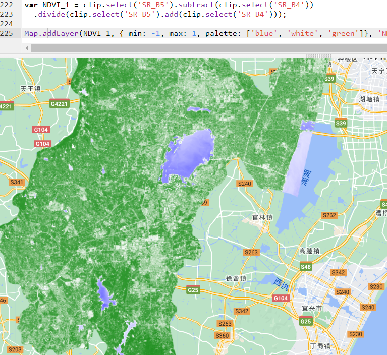
5.2 Application
5.2.1 Monitoring of wetlands
Mahdianpari et al. assessed 30 years of change in Newfoundland wetlands using Landsat imagery, spectral indices and random forest classification within the Google Earth Engine (GEE) cloud computing platform.
Overall accuracy was high, ranging from 84.37% to 88.96%. In a comparison of different classifiers, random forest produced the highest accuracy results and allowed for the estimation of variable importance when comparing classification to regression trees (CART) and minimum distances (MD).
The most important variables included thermal infrared (TIR), elevation, difference vegetation index (DVI), shortwave infrared (SWIR) and normalised difference vegetation index (NDVI). The change detection analysis showed that bog, marsh and swamp were the most common wetland categories for all time periods and that boggy wetlands were the most common wetland type for all time periods. The analysis also revealed a general instability of wetland categories, although this was mainly due to transitions from one wetland category to another.
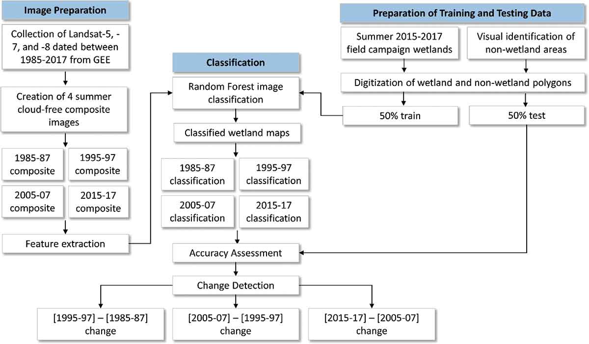
The result of different land cover classification 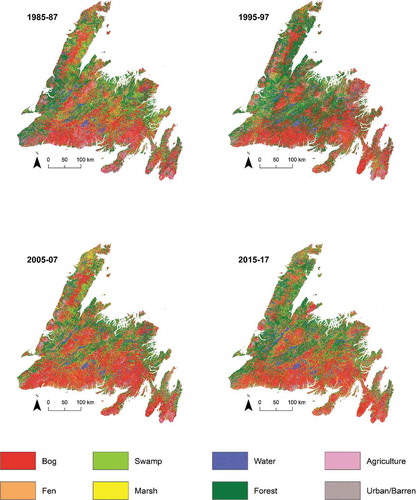
5.2.2 Forest cover change
Hansen et al. (2013) studied the change of forest cover in global area. The studied published in 2013 that used satellite data to map global forest loss and gain from 2000 to 2012123. The paper reported that the tropics had the highest forest loss and the lowest forest gain, while subtropical forests had the highest rates of forest change due to intensive forestry.
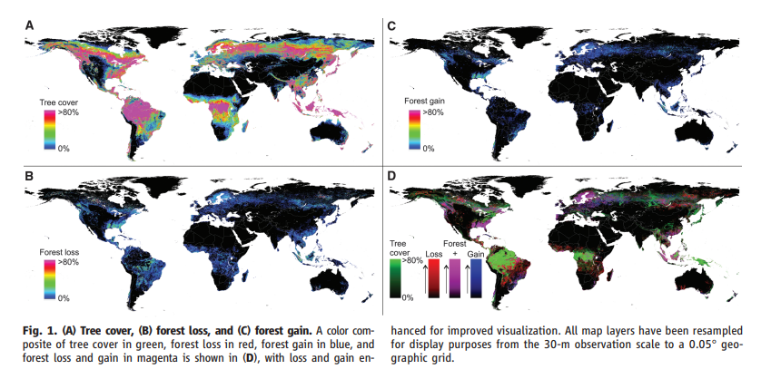

5.3 Reflection
In this week, I learned knowledge in several aspects: how to use Google Earth Engine to create points and analyse the ROI assisted with GADM boundary map.
understood the advantages and disadvantages of using median methods to get the reduced images (advantages: fast calculation, be suitable for those objects which has giant difference; disadvantages: not accurate, can not reflect the trend of change) and knew the alternative and more accurate methods (multiple quantile methods: using 10% quantile, 25% quantile, 75% quantile, seasonal medians methods: using four medians to represent 4 seasons)
create true color image, mosaic image, clip image and do the texture adjustment by glcm
principle component analysis and find the explainable percentage, calculated NDVI and export them to local